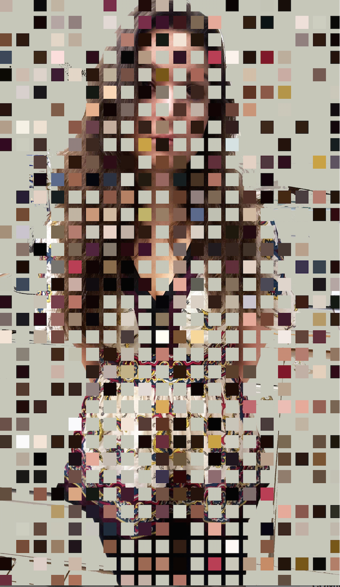
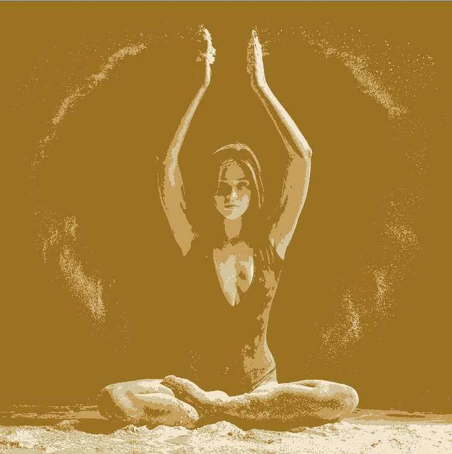
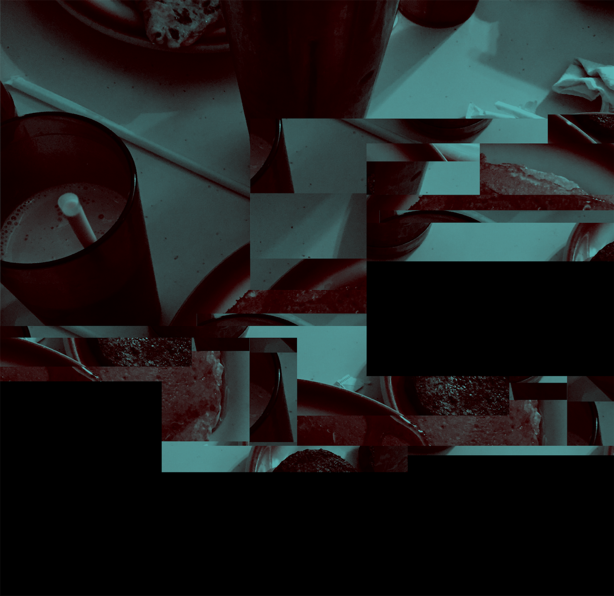
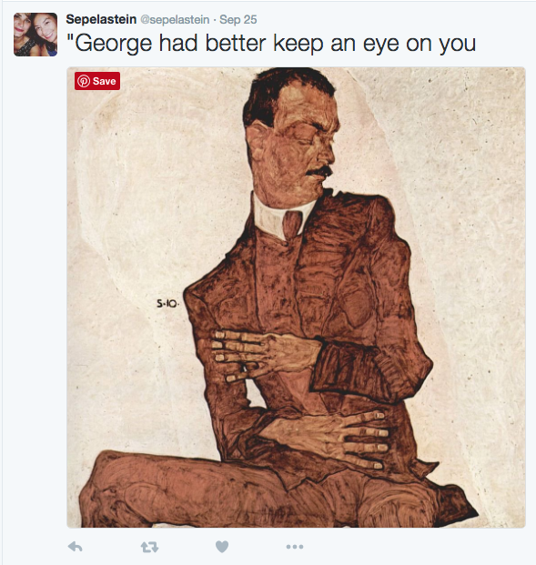
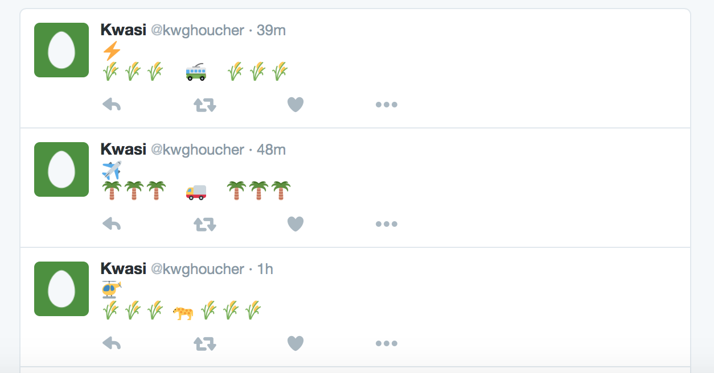
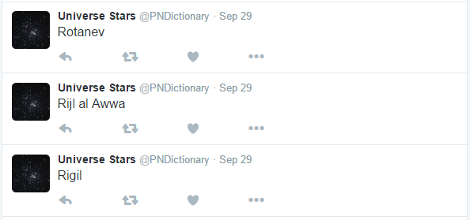

Image Filters
Students designed their own Instagram-style image filters, implemented in Python. This involved pixel-by-pixel processing of the image matrix.
Elizabeth Capella
A colorful and stylish grid overlay derived from the color content of the original image
Rahlana Smith
A posterization-style filter
Sarah Steinhauser
A textured, sepia-toned filter

Steph
A collage filter that creates a new, tinted collage artwork from the source image
Twitter Bots
Steph
A collage filter that creates a new, tinted collage artwork from the source image
Steph
A collage filter that creates a new, tinted collage artwork from the source image
Steph
A collage filter that creates a new, tinted collage artwork from the source image
Audio Projects
Learning to use the studio as an instrument, through sampling, signal processing, sequencing and mixing. These are examples of the three composition projects done during the semester.
Rachel Smith: Sampling Project
A musique concrete-style composition using sampling, sequencing, and audio effects to create a new composition using only open-source samples and digital audio workstation.
John Mann: Synthesis Project
A composition limited to using additive synthesis techniques, inspired by the elektronische musik of the Cologne studio of the 1950s.
Carl Bakenhus: Final Project
An open composition project of electronic music, usign a combination of sampling, synthesis, and signal processing. Here Carl uses parameter automation in Ableton Live to create a dynamic and evolving piece of sound collage.